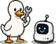
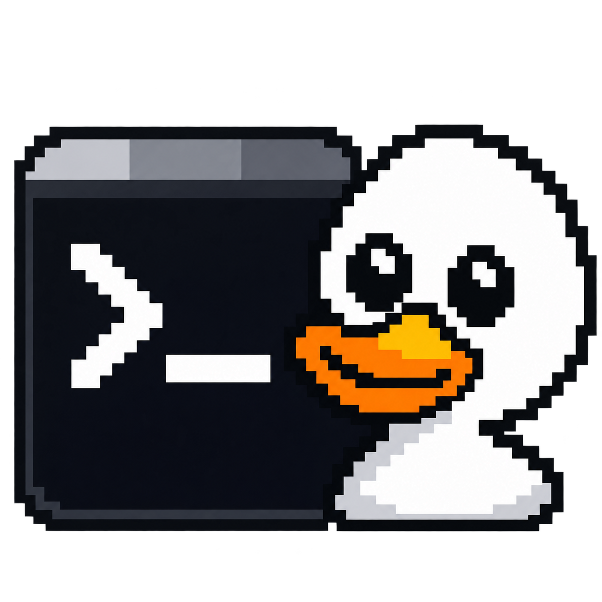

Terminal
Open CMD, PowerShell, or WSL. Split and resize panes, switch tabs by keyboard, and browse files or history without leaving the terminal.

Duck CodeA Windows terminal and coding workspace that keep your shells, Git changes, and AI conversations close at hand.
Get the Windows release
Open CMD, PowerShell, or WSL. Split and resize panes, switch tabs by keyboard, and browse files or history without leaving the terminal.
Explore a project, edit files, review Git changes and diffs, and keep a project terminal open below your editor.
Enable AI features to find saved Codex and Claude conversations by title or folder. Start graphical conversations in Quack Workspace.
Quackterminal.exe for the terminal or QuackWorkspace.exe for the desktop workspace.@upgrade or choose Check for updates from the title bar menu. Close both apps when the update is staged.The Windows builds are unsigned. Windows may show a SmartScreen prompt on first launch.